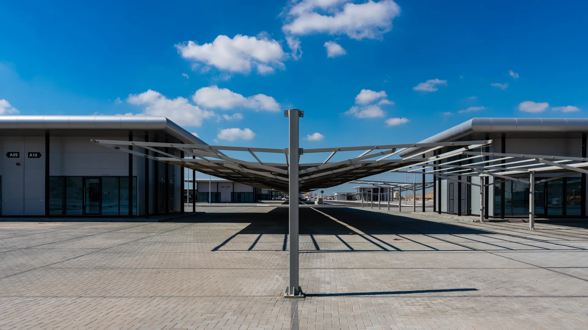
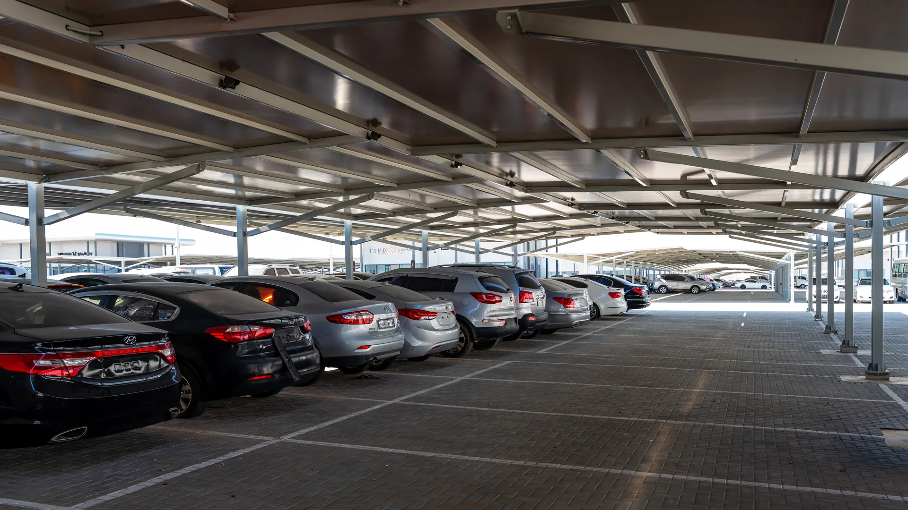

Car Souq
Commercial · Ajman, U.A.E
Nestled at the intersection of innovation and ambition, this premier Car Souq serves as a majestic theater for the automotive world, housing an elite collection of more than 50 professional showrooms across a sprawling 21,000 square-meter landscape. It is a meticulously crafted ecosystem where the prestige of world-class retail meets the precision of essential on-site services, weaving together a seamless tapestry of convenience for dealers and enthusiasts alike. Designed with a visionary focus on fluid efficiency, the project transcends the traditional marketplace to become a sophisticated automotive sanctuary of grand proportions. Every architectural detail within this comprehensive hub has been polished to perfection, establishing it as the definitive landmark for the industry in Ajman, a place where the passion for the road finds its true home.
The architectural concept emerged from a careful reading of the site's orientation, prevailing wind patterns, and the client's vision for a landmark that would serve the community for decades. The massing strategy creates a dialogue between solid and void, allowing natural light to penetrate deep into the floor plates while maintaining thermal comfort in the UAE's demanding climate.
Material selections were chosen for their durability, low maintenance, and aesthetic contribution to the neighbourhood's evolving urban fabric.

